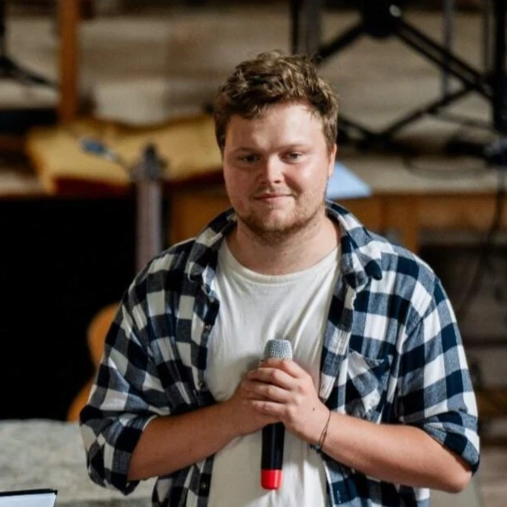

Petr Kučera
Computer Engineering Student
I am a computer engineering student at CTU FEE, specializing in embedded technologies. I enjoy organizing events and leveraging modern technologies to simplify life.
contact me

Computer Engineering Student
I am a computer engineering student at CTU FEE, specializing in embedded technologies. I enjoy organizing events and leveraging modern technologies to simplify life.
contact me